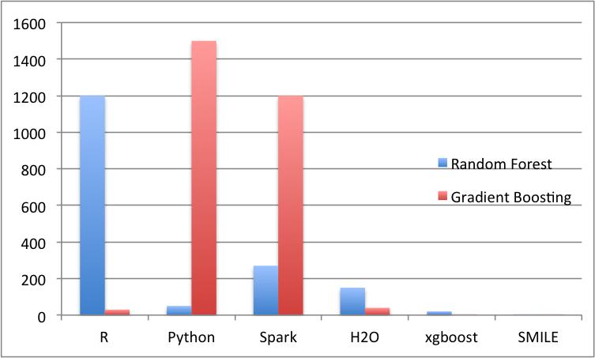
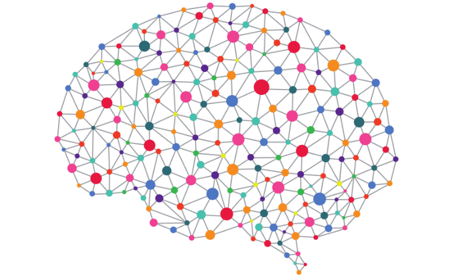
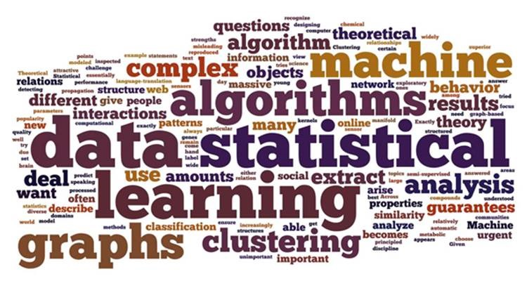
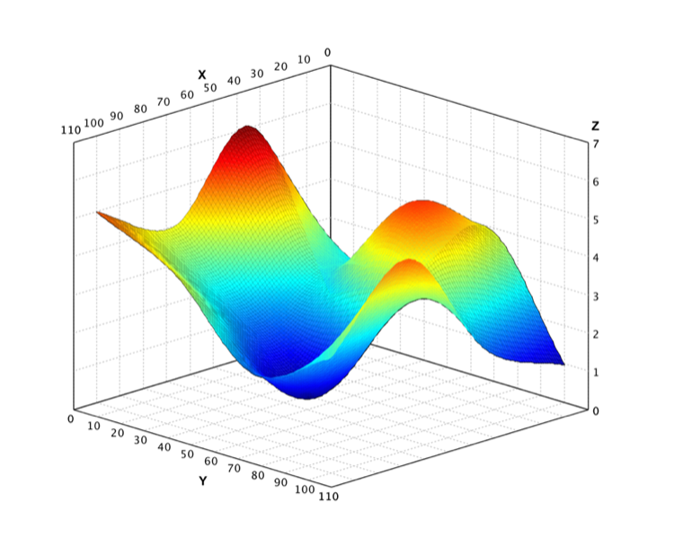
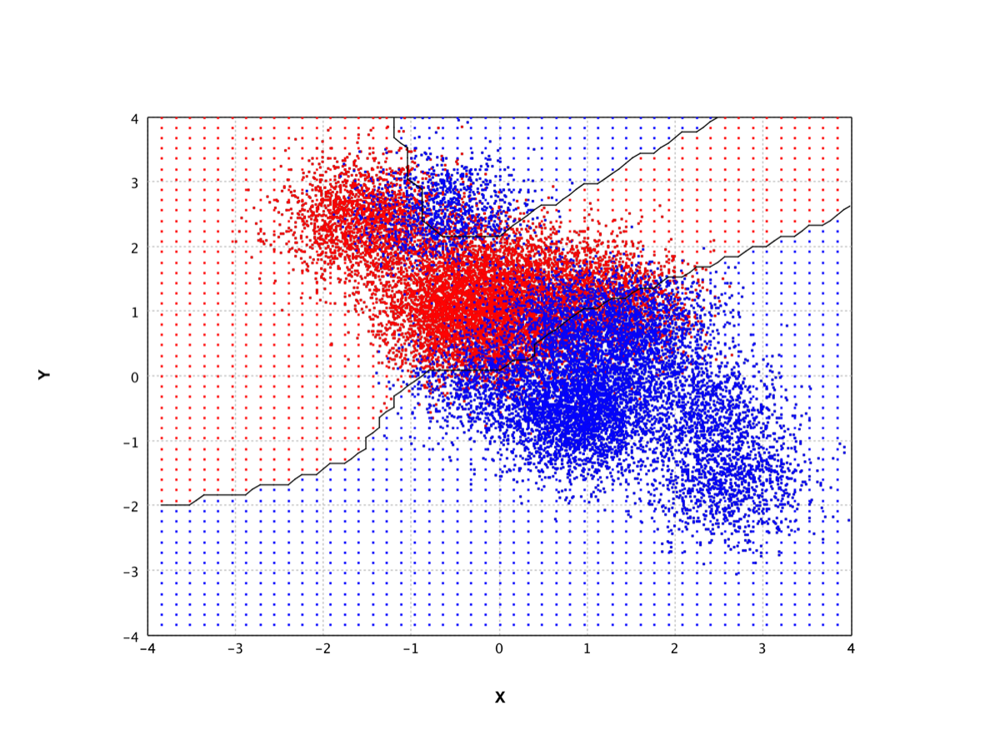

SMILE is a comprehensive, high-performance machine learning engine for the JVM. From classic algorithms to GPU-accelerated deep learning and LLaMA-3 inference — all in pure Java, Scala, or Kotlin. Get started in 5 minutes →
SMILE now seems to be the go-to general-purpose machine learning library for those working in the Java and Scala worlds — a JVM Scikit-learn, if you will. I would actually find it hard to believe that you are working in that ecosystem and are unaware of the project.
SMILE gives you a broad range of algorithms out of the box, ranging from simple functions like classification and regression to sophisticated offerings like natural language processing. And all you need is Java, or any JVM language.
SMILE will amaze you with fast and extensive applications, efficient memory usage and a large set of machine learning algorithms for Classification, Regression, Nearest Neighbor Search, Feature Selection, etc.
To say that I am satisfied with SMILE would be an understatement. It's truly one of the hidden gems in the Java framework ecosystem today.
LinkedIn used SMILE to train its workforce on machine learning for its AI Academy. SMILE was chosen because it's a Java library with a friendly open source license and supports a wide range of common algorithms.
We leverage Smile's impressive capability in various machine learning tasks: feature engineering, modeling, visualization, benchmark test, etc. Thanks SMILE and strongly recommend it to every engineer who is interested in machine learning.
SMILE is a great Java library for a wide range of AI tasks. Building bespoke methods atop SMILE run considerably faster than implementations in other languages more associated with data science.
Advanced data structures and algorithms deliver state-of-the-art performance.
Compared to a third-party benchmark, SMILE outperforms R, Python, Spark, H2O, and XGBoost significantly — often by several times while using far less memory. If you can train advanced models on a laptop, why buy a cluster?

Write applications quickly in Java, Scala, Kotlin, Clojure, or Groovy. Data scientists and engineers can now speak the same language.
SMILE provides hundreds of algorithms behind a clean, consistent API. The Scala and Kotlin bindings add high-level operators and DSL builders. Use it interactively from the SMILE shell or embed it in any JVM application.
var iris = Read.arff("iris.arff");
var model = RandomForest.fit(Formula.lhs("class"), iris);
println(model.metrics());
val iris = read.arff("iris.arff")
val model = randomForest("class" ~, iris)
println(model.metrics)
val iris = read.arff("iris.arff")
val model = randomForest(Formula.lhs("class"), iris)
println(model.metrics())
(let [iris (read-arff
"data/weka/iris.arff")
model (random-forest
(Formula/lhs "class") iris)]
(.metrics model))
var iris = Read.arff("iris.arff")
var model = RandomForest.fit(Formula.lhs("class"), iris)
println model.metrics()
Run LLaMA-3 inference natively on the JVM — no Python bridge required.
SMILE ships a complete LLaMA-3 stack backed by LibTorch: tiktoken BPE tokenizer, grouped-query attention (GQA), rotary positional encoding (RoPE), SwiGLU feed-forward, and KV-cache. An OpenAI-compatible REST server with Server-Sent Events (SSE) streaming is included for production deployment. See Large Language Models.
var llama = Llama.build(
"model/Meta-Llama-3-8B-Instruct",
"model/.../tokenizer.model",
4, 2048, (byte) 0);
int[][] prompts = llama.tokenizer.encode(
"Once upon a time", true, false);
var result = llama.generate(prompts, 200,
0.6, 0.9, false, 42L, null);
var reply = llama.chat(
new Message[]{
Message.system("Be concise."),
Message.user(
"What is RoPE?")
},
128, 0.7, 0.9, false, 0L, null);
System.out.println(reply.content());
GPU-accelerated neural networks — build, train, and deploy on LibTorch.
The smile-deep module exposes LibTorch tensors, all standard
layer types (linear, Conv2d, pooling, BN/GN/RMS norm, dropout, embedding),
loss functions, and optimizers (SGD, Adam, AdamW, RMSprop) through a clean
Java API. Pretrained EfficientNet-V2 (S/M/L) models for
ImageNet classification are available with a single method call.
See Deep Learning.
// Pretrained EfficientNet-V2-S
var model = EfficientNet.V2S();
var img = ImageIO.read(
new File("dog.jpg"));
// Auto-preprocesses the image
try (var logits = model.forward(img)) {
var probs = logits.softmax(1);
int cls = probs.argmax(1, false)
.intValue();
}
var mlp = new SequentialBlock(
Layer.relu(784, 256),
Layer.relu(256, 128),
Layer.logSoftmax(128, 10));
var opt = Optimizer.adam(
mlp.asTorch().parameters(), 1e-3);
mlp.train(10, dataset,
Loss.nll(), opt,
new Accuracy(), testDataset);
The most complete machine learning engine on the JVM.
SMILE covers every aspect of machine learning — LLM, computer vision, deep learning, classification, regression, clustering, association rule mining, manifold learning, nearest-neighbor search, feature engineering, missing-value imputation, time series, NLP, and more. See the sidebar for a full list of algorithms.

From classic text processing to state-of-the-art LLM inference.
SMILE includes classic NLP building blocks — sentence splitter, word tokenizer, Porter/Lancaster stemmers, HMM POS tagger, bigram/phrase extraction, keyword detection, BM25 relevance ranking, and Word2Vec embeddings — alongside the full LLaMA-3 inference stack. See NLP and LLM.

A complete numerical computing environment inside the JVM.
Dense, band, and sparse matrices; LU, Cholesky, QR, EVD, SVD decompositions; BFGS / L-BFGS optimizers; wavelets; interpolation (linear, cubic spline, bilinear, bicubic); probability distributions; hypothesis tests (t-test, chi-squared, ANOVA, KS); and even a Scala-based computer algebra system with symbolic differentiation. See Linear Algebra and Statistics.
var A = Matrix.randn(3, 3);
double[] x = {1.0, 2.0, 3.0};
var lu = A.lu();
lu.solve(x);
lu.inverse().mm(A);
int[] bins1 = {8, 13, 16, 10, 3};
int[] bins2 = {4, 9, 14, 16, 7};
Hypothesis.chisq.test(bins1, bins2);
val x = Var("x")
val y = Var("y")
val e = x**2 + y**3 + x**2 * cot(y**3)
val dx = e.d(x)
println(dx)
Interactive 2D/3D Swing plots and declarative Vega-Lite charts.
Scatter plot, line plot, bar plot, box plot, heatmap, hexmap, histogram, QQ plot, surface, contour, dendrogram, wireframe, and more. SMILE also supports declarative visualization that compiles to Vega-Lite for browser and Jupyter rendering. See Visualization and Declarative Visualization.

